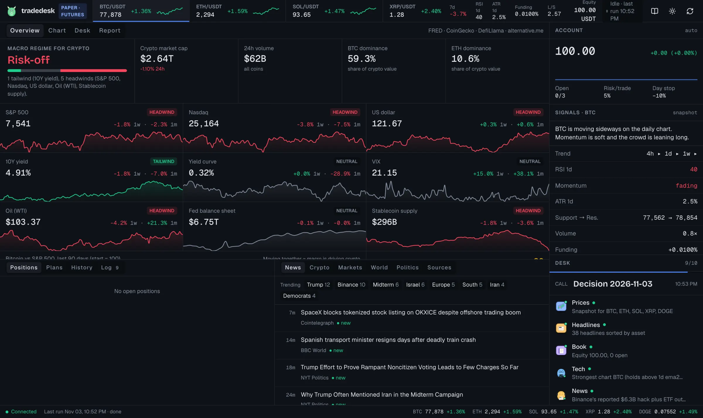
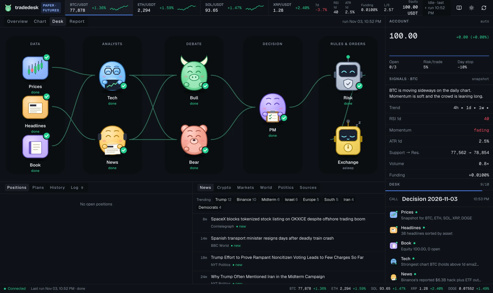
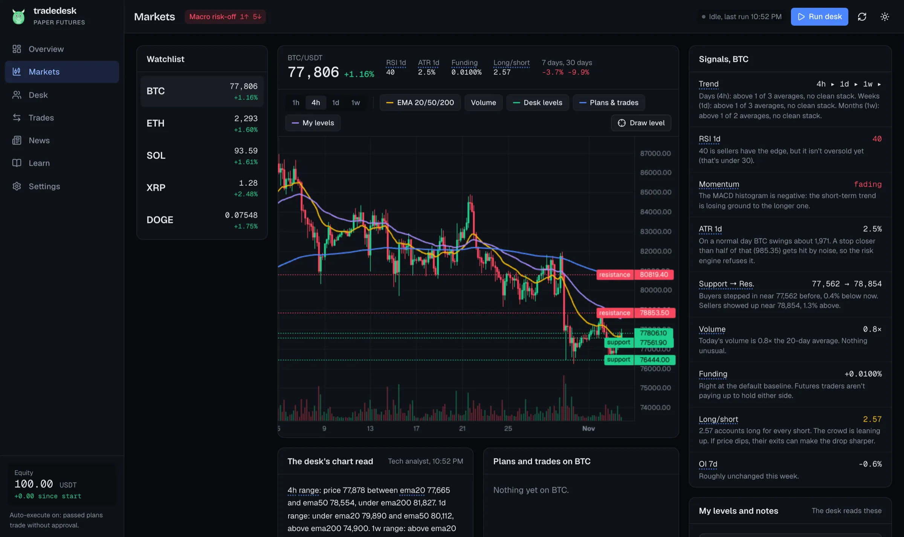

AI agents argue about the trade. Plain code decides what you can lose.
tradedesk is a crypto trading desk on your laptop. Claude Code agents read the charts and the news and argue for and against each idea. A short Python risk engine sizes every trade so a stop-out costs 1% of your account, and throws out the ones that break a rule. Binance holds the stop from the first second.
Starts in paper mode. No exchange account or API keys needed to try it.

The overview tab during a paper run. Nine macro series, each marked as a tailwind or headwind for crypto, before any agent says a word.
How a day runs
Five roles, one round of debate, and a veto.
You type /daily in Claude Code, or let cron do it. One pass takes a few minutes and leaves a folder of short text files you can read afterwards.
- The desk collects data.4h, daily and weekly candles, funding and open interest from Binance. Headlines from the last 36 hours. Your equity, open positions and lessons from past trades.
- Two analysts read their part.The technical analyst sees only the numbers. The news analyst sees only the headlines and the macro calendar.
- A bull and a bear make their case.Both read both reports. One round, 200 words each.
- The portfolio manager decides.It writes ideas with entry, stop, target and horizon. Passing is a valid answer, and a common one.
- The risk engine checks every idea.It sizes the trade and rejects anything that breaks a rule. No appeal.
- You approve or reject.What passes waits in the dashboard. Approving sends it to Binance with the stop attached.

Who does what
The model writes opinions. It never touches the numbers that cost money.
Language models are good at reading and arguing and bad at arithmetic they care about. So the split is strict.
AI The agents
- Read the snapshot and the headlines
- Argue for and against a trade
- Propose entry, stop, target and horizon
- Rewrite
lessons.mdonce a week from closed trades
Code The risk engine and you
- Position size, leverage and whether a trade passes
- Every price checked against the market before an order goes out
- Approval of each trade, unless you turn on auto-execute
- Your API key, which the agents are blocked from reading
Safety
Built for the day it goes wrong.
Most people who trade with leverage lose money. tradedesk will not change that. What it does is cap how much a single bad idea, a crashed laptop or an overconfident model can cost you.
- Stop on the exchange first. On spot, entry, stop and target go out as one order list. If a stop can't be placed on futures, the position is closed at once.
- Your laptop can be off. Because Binance holds the stop, a failed run or a dead battery doesn't leave a position open without one.
- Stops only move your way. Nothing in the code can widen a stop against you.
- A bad day ends the day. After a 3% daily loss there are no new trades until the next UTC day.
- A bad month ends trading. At 15% drawdown the desk stops opening positions until equity recovers.
- Limits on everything open. At most 4 positions, 4% total risk across all stops, 3x leverage on futures.
- No stops that are just noise. A stop closer than half an ATR to the entry is rejected.
- One command to get out.
desk kill --flattencancels every order and closes every position.
All numbers are defaults in desk.example.toml. You can change them. The agents can't.
The dashboard
See the market, the argument and the result in one place.
A local web page on 127.0.0.1:8420. Nothing is hosted anywhere.

Macro regime
S&P 500, Nasdaq, dollar, 10-year yield, yield curve, VIX, oil, the Fed balance sheet and stablecoin supply, summed up as risk-on or risk-off.
Charts, news and plans
Candles with the levels the analyst used, headlines sorted by asset, and every plan with its entry, stop, target and size.
An honest report
Every idea is replayed on real 1h candles, including the ones you rejected and the ones the risk engine threw out. You see whether the process works before you pay for it.
Setup
Four commands to a running desk.
You need uv and Claude Code. Paper mode works without a Binance account.
Want to look first? uv run desk demo replays a made-up run on a separate database.
For testnet or live trading, put a Binance API key in .env. Give it trading permission only, turn withdrawals off and restrict it to your IP. The README covers the rest.
$ git clone https://github.com/danieljancar/tradedesk
$ cd tradedesk && uv sync
$ uv run desk serve # dashboard on 127.0.0.1:8420
$ claude # then type /dailyQuestions
Before you try it
Is this financial advice?
No. The agents produce generated text and they can be wrong, confidently. tradedesk is a tool for running and recording your own process. Every decision to trade is yours.
Does it make money?
There's no promise that it does, and you should assume it doesn't until your own numbers say otherwise. The report replays every idea on real candles so you can measure that in paper mode, without risking anything.
What does it cost to run?
tradedesk itself is free. The agents run inside Claude Code, so you need a Claude plan or API credits, and each daily run uses some of that. The market data comes from free public sources: Binance, FRED, CoinGecko, DefiLlama and news RSS feeds. Paper mode has no trading fees.
Is my API key safe?
The key lives in a .env file on your machine and never leaves it except in signed requests to Binance. There is no tradedesk server. The agents are blocked from reading .env by the Claude Code permissions in .claude/settings.json. Use a key with withdrawals off and an IP restriction, so that even a leaked key can't move your coins out.
Can the AI place trades on its own?
Not by default. The agents write ideas to a file. They can't approve them, change their size or edit the risk code. You approve each plan in the dashboard. If you set auto_execute = true, plans that pass the risk engine go out without asking, still sized by code and still with a stop on the exchange.
Read the code before you trust it.
The risk engine is one Python file. Start there, run it in paper mode for a few weeks, and let the report tell you if it's worth more.
Get it on GitHubDisclaimer
tradedesk is a hobby project by one person, built in spare time and shared as is under the MIT license. It is not a product, a service or a company.
- Not advice. Nothing on this page or in the software is financial, investment, tax or legal advice. The agents' output is generated text and can be wrong.
- No warranty. The software is provided without warranty of any kind. It may have bugs. The exchange may behave differently than expected, and orders may fail, fill badly or not fill at all.
- No liability. To the fullest extent the law allows, the author is not liable for any loss, missed gain or other damage that results from using it. You run it on your own machine, with your own keys and your own money, at your own risk.
- Real risk. Crypto prices move fast, and leverage can lose you more than you expect. Past results, including replayed ones, say nothing reliable about the future. Never trade money you can't afford to lose.
- Your local law. Crypto trading, derivatives and automated trading are restricted in some countries. Check that what you do with it is legal where you live.
- Not affiliated. This project is not affiliated with, endorsed by or sponsored by Binance, Anthropic or any data or news source it reads. Names are used only to describe what the software connects to.